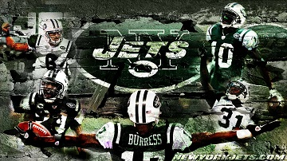
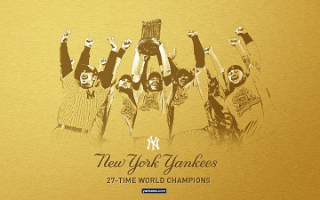
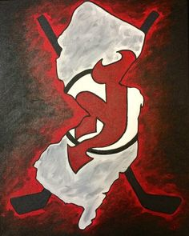

Favorite Sports and Teams



New York Jets
New York Yankees
New Jersey Devils
New York Knicks
I am a big fan of football and baseball, and recently had gotten into hockey. Although I'm not a strong basketball supporter, I enjoy watching basketball games. Besides New York teams, I also support Pittsburgh teams, including the Pirates, Steelers, and Penguins, but they aren't my favorites. My favorite athletes, no matter which team they're from or if they're retired or not, include Derek Jeter, Sidney Crosby, Antonio Brown, Darelle Revis, Mark Teixeira, Kobe Bryant, Martin Brodeur, Aaron Rodgers, and JJ Watt.